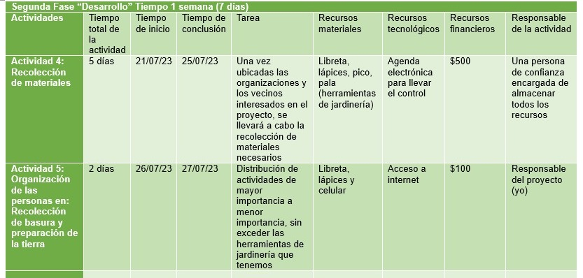
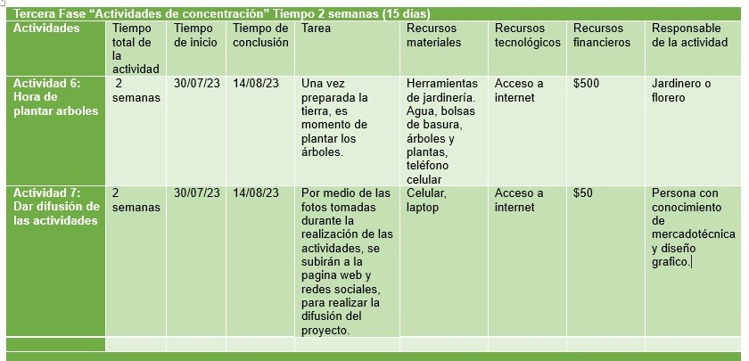
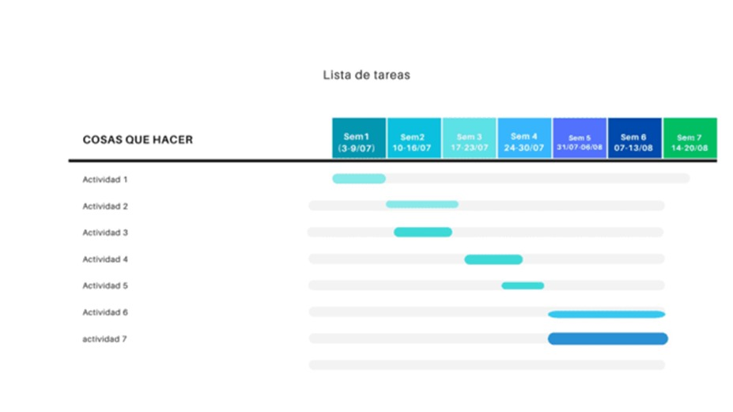

¿Por qué nació esto?
Desde que iniciaron las obras del trolebús en Chalco se talaron mas de 600 árboles, los cuales debían ser repuestos, esto con base a las leyes de protección ambiental.
Ha pasado mas de un año desde que estas obras comenzaron (Mayo 2022) los arboles no han sido recuperados y las autoridades no han tomado medidas al respecto, por lo cual como ciudadana, y al ser mi colonia una de las mas afectadas decidí tomar medidas en el asunto.
Es por eso que…
Al presentarse una tala masiva de árboles, mi principal objetivo con este proyecto es hacer conciencia en un lapso de 3 meses en mis vecinos y gente que radica en mi colonia, sobre la importancia de las áreas verdes. El por que la reforestación es tan importante y, sobre todo, que si no remediamos esta situación seremos participes de un aumento del calentamiento global, y con esto lograr recuperar los arboles que se perdieron.
Esto se planea lograr por medio de 3 objetivos específicos:
- Sembrar arboles en las zonas mas afectadas de mi colonia.
- Recoger la basura de las zonas permitidas como parques o deportivos de mi colonia, para favorecer la creación de áreas verdes.
- Mantener un cuidado en los arboles sembrados para que logren crecer.
¿Cómo lo lograre?
Para poder llevar a cabo mi proyecto y sus objetivos, realizare ciertas actividades, las cuales se dividirán en 3 fases:


Para tener una mejor percepción de las actividades nos apoyaremos en el diagrama de Gantt

Cabe aclarar que no todo es perfecto, es por ello que, con base a las actividades planeadas, se plantearon posibles escenarios donde todo podía salir o muy bien o muy mal, información que encontraran en el siguiente enlace:
https://www.canva.com/design/DAFkz5U6WWA/zum0R08HEG0SiI1q2rmQsg/edit?utm_content=DAFkz5U6WWA&utm_campaign=designshare&utm_medium=link2&utm_source=sharebutton
Como se podrá observar mi proyecto es uno que beneficiara a toda mi colonia, por lo cual uno de los recursos mas importantes para mi es el recurso humano. Para poder entender mejor esto, los invito a visitar el siguiente enlace:
https://drive.google.com/file/d/1NXOu2u4p0S7FzA438RUWSwb7_3dmvecX/view?usp=sharing
Ahora te preguntaras ¿Qué planeamos lograr con esta actividad? Bueno las metas con mi proyecto son:
- Sembrar un mínimo de 20 y un máximo de 50 arboles en la zona de mi colonia en un máximo de 3 meses.
- Organizar una faena donde se limpien los deportivos, parques y calles de mi colonia.
- Mantener en observación los arboles plantados para lograr que agarren fuerzas y logren sobrevivir.